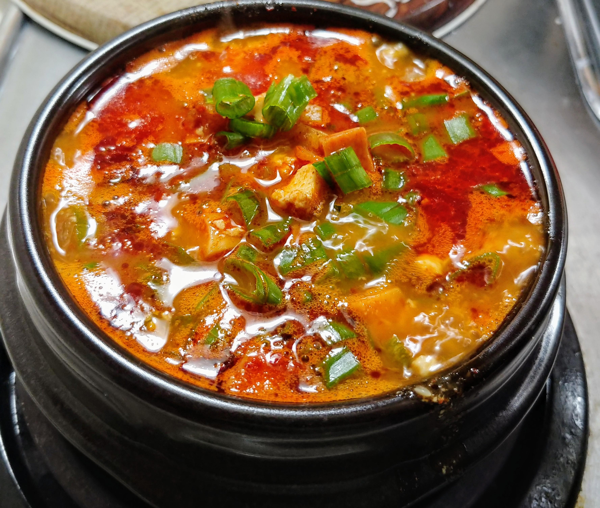

Sundubu Jjigae
Home Page

Sundubu jjigae is a Korean stew made with soft (uncurdled) tofu as a highlight ingredient.
Ingredients
- Silken Tofu
- Onion
- Garlic
- Green Onion
- Kimchi
- Sesame Oil
- Any cut of tender steak like skirt steak or flat iron steak
- Gochugaru coarse flakes
- Gochujang
- Fish sauce
- Soy Sauce
- Beef stock or water
- Optional: Salt and Pepper to taste